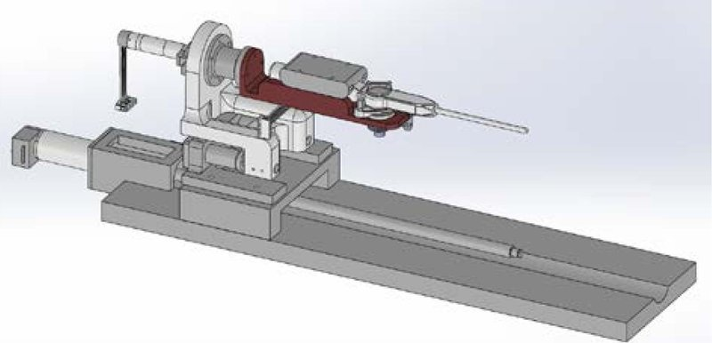

Academic bedside robots · kuaoc_park2010
KU force-reflecting
Korea University force-reflecting robotic platform for cardiac (EP) catheter navigation

1 / 4


- Family
- Academic bedside robots (academic)
- Devices
- one conventional cardiac ablation catheter loaded with its handle (park2010 Methods); 2011: 7 Fr Blazer II HTD EP catheter (Boston Scientific) (park2011 Methods)
- Degrees of freedom
- 3 (forward/backward translation, roll, tip-bending knob) (park2010 Methods, Fig. 1a); master 5 DOF (the 3 plus pitch and yaw for haptic rendering, Fig. 1b)
- Push
- Linear stage
- Twist
- Handle or knob
- Tested up to
- Phantom
- Sim-to-real
- None found — No simulation-trained controller found for this robot.
Testing
- Highest level
- Phantom
- What was tested
- bench: master/slave synchronisation with step, sinusoidal and manual motion, force-sensor check against a push-pull gauge (park2010 Results); phantom: the catheter inserted by teleoperation into a 600 x 400 mm vessel phantom with human-like inner radii while the virtual fixture warned of wall approach (park2011 Methods, Results); animal tests planned (park2010)
- Key numbers
- translation max 1000 mm/s and 83,000 mm/s^2, roll max 138 rad/s and 7,610 rad/s^2 (above the 300-700 mm/s and 11-43 rad/s required); force peaks 0.5 and 0.7 N detected, resolution 0.019 N; joint resolutions 0.002 mm / 0.037 deg / 0.00185 deg; 1 kHz synchronisation loop (park2010 Results, Methods)
Mechanism
- Push (translation)
- linear-stage+clamp: the whole catheter compartment (handle with roll and knob joints) rides a linear guide and ball screw driven by a Maxon EC-Max30 brushless motor; resolution 0.002 mm (park2010 Methods)
- Twist (rotation)
- roll joint (Maxon EC16) turns the mounted catheter and knob joint as one unit (0.037 deg resolution); knob joint: coupling socket on the bending knob driven by an EC16 and a worm drive (0.00185 deg) (park2010 Methods)
- Device range
- N.R.
- Target anatomy
- cardiac electrophysiology
Sensing and interface
- Force sensing
- load cell (Dacell UMM-1kgf) between the translation joint and the catheter compartment on a sliding bearing measures the axial reaction force, 0.019 N resolution (park2010 Methods, Results); force can also be estimated from motor current (Abstract)
- Leader and haptics
- custom 5-DOF haptic master with a catheter-handle-shaped housing: knob read by a magnetic encoder (no force feedback), roll with encoder + Maxon RE13 for feedback, translation on a wire-pulley bar with EC-Max13, plus pitch and yaw; RTLinux-Pro hosts linked by Ethernet, 1 kHz force loop (park2010 Methods); 2011: image-based forbidden-region virtual fixture rendered at the master (park2011)
- Imaging
- N.R. for X-ray; 2011 in vitro tests used a camera (Canon EOS 500D, 1080p, 20 fps, 0.37 mm/pixel) as a fluoroscopy stand-in (park2011 Methods)
- Sterility
- N.R.
Size
- Footprint (mm)
- N.R.
- Mass (kg)
- N.R.
Simulation
- Simulation model
- none found
- Sim-trained controller
- none found
Versions
- Lineage
- 2010 platform (park2010_development, Artif. Organs 34(11), full); 2011 forbidden-region haptic virtual fixture on the same master-slave platform, in vitro phantom (park2011_haptic, Artif. Organs 35(11), full)
Sources
- Development of a Force‐Reflecting Robotic Platform for Cardiac Catheter Navigation · Artificial Organs, 2010 · doi:10.1111/j.1525-1594.2010.01142.x [park2010_development]
- Haptic Virtual Fixture for Robotic Cardiac Catheter Navigation · Artificial Organs, 2011 · doi:10.1111/j.1525-1594.2011.01373.x [park2011_haptic]
Notes
- Notes
- Jaesoon Choi later led the Asan roller-cartridge robot (A2 asan_choi2021); inference: an early step of the same researcher's line. | 2026-11-08 X3: both papers read in full; highest_validation bench -> phantom (park2011 in vitro vessel phantom). The 2010 slave photograph (Fig. 1a, greyscale, callouts) is now in the gallery; the main picture stays the 2014 Asan CAD (B) whose identity remains inferred
This record
- Read level
- full — full (park2010_development, park2011_haptic;, )
- Picture
- moon2014_teleoperated Fig. 2 (slave manipulator with a conventional catheter, CAD), ICCAS 2014, doi:10.1109/ICCAS.2014.6988007 ↗ — licence: publisher copyright (IEEE/ICROS); grade B
- Picture changes
- native extract (1896 x 920); trimmed 4-10 px of white border; not upscaled
- Found by
- gap: Gap searches for robots the other searches missed.
- Data
- JSON · YAML:
records/robots/kuaoc_park2010.yaml - Correction
- Suggest a correction [repository not created yet]